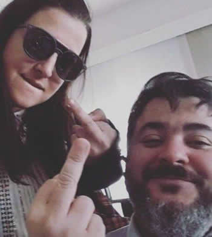

Real Chubut - Agencia de Noticias


Opinión: DE QUE SE RIEN I
A la risa se la considera básicamente una respuesta a momentos, o situaciones de humor, con expresión externa de diversión, aunque la risa según numerosos estudios, está motivada por el estimulo cómico de una minoría de casos cotidianos.
Entonces de que se ríen? O perdieron la noción del tiempo? Porque se ofenden, cuando los intendentes de las ciudades, que NO pertenecen al CHUPATO, se permiten una reunión para hablar de sus problemas cotidianos y de la marcha del gobierno provincial?, intentando solamente posibilitar un dialogo abierto y franco.
Se debe decir, que lo peor que puede hacer un gobierno es no escuchar , tema al que nos tiene acostumbrados la gestión verde en la provincia.
Hay que ser permeable al dialogo político y no a la estigmatización de quien opine distinto.
No es posible que producto de las internas que corroen el accionar del gobierno provincial , sea solo para festejar las “apretadas que se comen los intendentes y los jefes comunales”, que en algunos casos no llegan fin de mes y más aun no pueden pagar sueldos, así como tampoco es posible que un coro al mejor estilo del CORO KENNEDY , busque culpas en una reunión institucional ,a no ser que no se hayan enterado que la voluntad popular de 2015 los puso en Fontana 50 por escaso margen y que en todo caso deben gobernar para todos.
El coro KENNEDY tiene como barítono al Vicegobernador ARCIONI, al que le dejan el despacho de casa de gobierno cerrado con llave cada vez que reemplaza al primer mandatario , y que se expresa alegando que cada uno de los intendentes aportantes a esa reunión deben ordenar las cuentas , antes de pedir una reunión para ayudar entre todos a salir de una situación económica muy dura que tiene CHUBUT.
Pidió escuchar a los vecinos que según él se manifestaron masivamente por su candidatura y además se permitió cargar en el lomo del FPV una deuda provincial de arrastre del Gobierno anterior.

Se debe considerar entonces, que es pecaminoso al menos instalar cincuenta días antes de los comicios de octubre una idea de comerse a los chicos crudos.
No está obligado, el nobel ARCIONI, a conocer la historia de los últimos seis años de la Provincia, por lo cual es bueno recordarle , a ARCIONI; que en el año 2011 el Gobernador que asumió fue el que puso su propio jefe DAS NEVES y que ese gobernador arrastró una deuda similar que había dejado la gestión verde después de ocho años de gobierno concluidos en 2011.
No se pueden quemar los archivos y hacer que la historia comenzó hace dieciocho meses atrás, la deuda es deuda y en el 2011 DAS NEVES, dejo el gobierno con $3500 millones a pagar y un déficit de $70 millones mensuales, además pasar de 25000 empleados públicos que había en el año 2003 cuando asumió a 50000 en el año 2011.
Hoy la deuda pública es de $18.000 millones y el déficit mensual es de 350 millones coctel explosivo si los hay.
Entre valentonada prepotencia, en eso de no reconocer cosas, o sea mirarse el ombligo, hay que recordar que producto de la discusión precisa y contundente Comodoro Rivadavia logró, merecida por cierto, la Ley Provincial de Hidrocarburos propuesta por el FPV-PJ, esta ley redituó más ingresos no solo para la Provincia , sino que también a los municipios de zona sur que compensaron algo por lo que dieron durante mas de 100 años a Chubut y a Nación.
AsÍ las cosas el estado de asamblea es permanente, los mandatarios municipales y de comunas rurales, tienen todo el derecho de peticionar , mas allá que el Vicegobernador a cargo no come vidrio y cree que la fama lo espera, tiene una actitud beligerante que provoca oraciones pertinentes de parte de una sociedad cansada de aprendices que quieren ejercitar el poder.
Está claro además que el parte del coro que lo rodea, al vice, lo envían al camino de la confrontación con el riesgo de aislarlo, si pudieran por una cuestión de mando o de poder lo cortarían en tiritas, lo salarian y lo convertirían en charqui porque para ellos es solo un inquilino adaptable a los placeres del cargo.
Los retoños DAS NEVES, en su afán por anunciar y denunciar lo hacen incurrir, a ARCIONI, con sus declaraciones, en desatinos permanentes y promisorios, por otro lado,ellos, saben lo que dicen, faltando el respeto a legisladores y a la ciudadanía, no comprendiendo que esta política comunicacional propuesta asegura en un plazo determinado, pleno estado de desbande y fragmentación.
La mesa chica verde esta alerta, ellos quieren seguir manteniendo el poder, con la tranquilidad de aquellos que se encuentran seguros que nadie puede descubrir sus intenciones, para eso necesitan permanentemente embarrar la cancha por falta de respuestas que a 18 meses, no llegan a la gente.
Es un conjunto de voluntarismos individuales porque el yo suplanta al nosotros, con el guitarreo autodidacta del jefe de los diputados del CHUPATO, que usa argumentos desopilantes sobre todo para justificar la multiplicación de dudas que tira para delante sin hacer nada por resolverlas al punto tal de tratar de principiantes a varios intendentes que tienen su historia política en el justicialimo.
Deben reconocerlo, se van a la B, y como todo equipo que se va a la B el libro de pases se abrirá indefectiblemente , habrá implosión ,no habrá cheque mensual que alcance para contener a los jefes comunales que dependen de la chequera verde, y que se sienten de manera consiente usados por el coro de la mesa chica.
Es el momento explicable de la próxima revancha.
Es un desafío a que algunos actores recuperen su identidad partidaria.
Hay una olla en ebullición, porque electoralmente hablando, quizás, haya un voto curativo. Seguirán en el coro profundizando equivocaciones, dando ciertos mensajes de desorientación en el CHUPATO , porque sigue siendo al menos imposible, para el análisis, que una derrota sea tergiversada como triunfo cuando a habido 20000 votos más a favor del PJ-FPV en las PASO haciendo una grosera utilización de un triunfo que no fue tal, porque en definitiva el electorado no es una subasta.
En todo caso, quizás confidencialmente, alguien les sugiera hablar menos y hacer más salvo que crean haber descubierto la TEORIA DE LA RELATIVIDAD.
Por: Alberto Hroncich
PUBLICIDAD